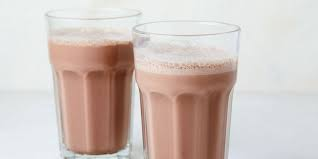

Chocolate Milk
How could you transform one of the most popular beverages on Earth and make it even better? By making it not taste like the original beverage. Enter choccy milk. Choccy milk takes all the problems that milk had and just puts chocolate over them to make them bearable. This beverage is arguably the most delicious out of the entire list, but it does not come without a price. The choccy milk recipe is far more advanced than the previous recipes and this should be taken into account when one decides to make this delectible beverage.
Here's what you'll need.
- Milk
- powdered chocolate milk mix
- chocolate milk
How to make it:
- follow the steps presented in the milk recipe to gain milk.
- Mix the choccy milk mix into the milk, making it edible.
- Sip concotion and be disappointed that you either added too much or too little of the chcoolate milk mix.
- Realize you have been tricked into drinking milk and throw that nonsense out.
- Remove contents from home (Optional: Go to store and buuy pre-made chocolate milk made from chocolate cows or rabbits.
return to Home